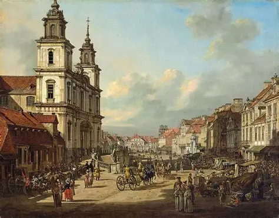

Key Moments in Polish History
Poland's past includes medieval kingdoms, the Polish–Lithuanian Commonwealth, partitions, and rebirth. Discover milestones that shaped the nation.
Learn about important dates, leaders, and events that define Poland's identity.
Foundations & Kingdoms

- 966: Mieszko I converted to Christianity and united Polish tribes.
- 1025: Bolesław I the Brave became the first crowned king of Poland.
- 1138: The fragmentation of Poland began with the Testament of Bolesław III.
Commonwealth & Partitions
The Polish–Lithuanian Commonwealth (1569–1795) was a major European power until it was partitioned by its neighbors.
- 1772, 1793, 1795: Three partitions erased Poland from the map.
- 1791: The Constitution of May 3 was adopted—the first modern constitution in Europe.
Modern Era
Poland regained independence in 1918, endured World War II, and emerged from communism in 1989.
- 1939: Germany and the Soviet Union invaded Poland, starting World War II.
- 1945–1989: Poland was part of the Eastern Bloc under communist rule.
- 1989: The Solidarity movement helped bring democracy to Poland.